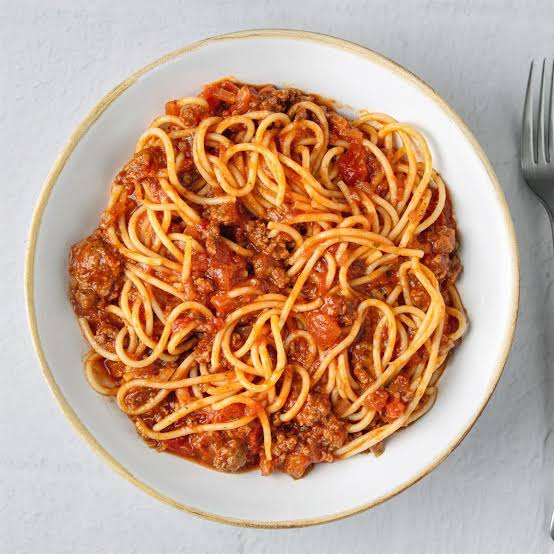

Spaghetti

Here's a simple recipe for a delicious spaghetti:
Ingredients:
- 200g spaghetti
- 2 tablespoons olive oil
- 2 cloves garlic, minced
- 400g canned tomatoes
- Salt and pepper to taste
- Fresh basil leaves for garnish
Instructions:
- Cook the spaghetti according to the package instructions until al dente. Drain and set aside.
- In a large pan, heat the olive oil over medium heat. Add the minced garlic and sauté for about 1 minute until fragrant.
- Add the canned tomatoes to the pan and break them down with a spoon. Simmer for about 10-15 minutes until the sauce thickens. Season with salt and pepper to taste.
- Toss the cooked spaghetti in the tomato sauce until well coated.
- Serve the spaghetti hot, garnished with fresh basil leaves.
Back to Home